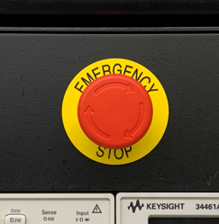

Lab 3 : Digital Multimeter
Seneca College SES250 Electromagnatics
Objectives
- To learn how to operate the power supply and digital multimeter (DMM)
- To become familiar with measurement techniques of direct current (DC)
Purpose
- Operate a DC power supply
- Setup and read measurements from a digital multimeter (DMM)
Important Rules for this Lab
- Any signal (voltage, current) must be adjusted to the specified value (amplitude and/or frequency) before applying them to a circuit.
- An instrument must be set up for the required mode of operation before it is connected to a circuit.
- The power supply must be switched off before making any changes to the circuit.
Description
Digital Multimeter (DMM)
A multimeter is a measuring instrument that can measure multiple electrical properties. A typical multimeter can measure voltage, resistance, and current. However, some multimeters, such as the one in the electronics lab, can also measure capacitance. Digital multimeters (DMM) have numeric displays and have made analog multimeters obsolete as they are cheaper, more precise, and more physically robust than analog multimeters.
Source: Wikipedia: Multimeter

Figure 3.1 Keysight 34461A Digital Multimeter
In the electronics lab, you will be using a Keysight 34461A (or similar) Digital Multimeter. Its manual can be found here: DMM Manual
Direct Current (DC) Power Supply
An adjustable DC power supply converts electricity from the power grid to a specified voltage and current and then provides them at its output connector.

Figure 3.2 Agilent E3632A DC Power Supply
In the electronics lab, you will be using an Agilent E3632A (or E3631A or similar) DC Power Supply. Its manual can be found here: DC Power Supply Manual
Materials
- Safety glasses (PPE)
Preparation
Answer all the lab preparation questions at the end of this document in your lab notebook BEFORE your lab session. Students who did not complete the lab preparation will be asked not to join the lab and receive a grade of ZERO (0) for the lab.
Lab preparation must be done individually in the lab notebook.
Lab Preparation Question:
Copy the following observation table in your notebook for this lab:
Output: +1V Output: +2V Output: +5V Output: +10V Range: 100mV Range: 1V Range: 10V Range: 100V Range: 1000V Research: beside voltage, resistance, and current, list two other electronics-related properties a modem DMM can measure.
- In your own word, explain the difference between the two ON/OFF settings of the DC power supply we use in this lab.
Procedures
Part 1: Safety
- Ensure that you are wearing your safety glasses, not wearing open-toe shoes, and any long hair must be tied-up.
-
At the top of your workbench, you’ll see a red “Emergency Stop” button (shown in Figure 3.3). At any time when the button is in the pressed position, your workbench will be disconnected from the power source. Press this button if there are any issues with your equipment or circuit (such as unusual heat, unusual smell, smoke, spark, or fire). To release the button, twist it as per the symbol on the button and the button will no longer be pressed.

Figure 3.3 Emergency Stop Button
-
Ensure the Emergency Stop button is in the released position.
Part 2: Digital Multimeter (DMM) and DC Voltage Measurement
-
Identify the digital multimeter (DMM) at your workbench. If there are two DMMs, use the one on the left-hand side. Disconnect any cables that are plugged in it so the DMM is as shown in Figure 3.4 below.

Figure 3.4
-
Set the DMM to DC voltage measurement mode as follows: If the DMM is not already powered on, push the power button (1). Once the DMM is ON, push the DC voltage (DCV) measurement mode button (4). If the “Range” indicator (3) is not showing “Auto”, press the menu button under “Range” (2) and change it to “Auto”.
-
Identify the two cables that are next to the DMM with a banana connector on one end and an alligator clip on the other end.
-
Connect the banana connector from the red cable to the red terminal labelled with “HI” under “Input VΩ►|” (5).
-
Connect the banana connector from the black cable to the black terminal labelled with “LO” under “Input VΩ►|” (6)
Figure 3.5
-
Verify the cables are connected as per shown in Figure 3.5 above. At this point, your DMM is set up to measure direct current (DC) voltage. We’ll be discussing direct current voltage during class. Remember this configuration for future labs and careers as measuring DC voltage is a very important skill for working with electronics.
-
Identify the DC power supply at your workbench. If there are two DC power supplies, use the one on the left-hand side. Disconnect any cables that are plugged in so it is as shown in Figure 3.6 below.

Figure 3.6
-
Turn on the DC power supply (1) and then press the “Display Limit” button (2).
-
Select the appropriate output voltage range (10) and use the lowest possible setting for a 5V output. In Figure 3.6 above, the lowest setting is "15V, 7A", however, the lowest output range varies between different models of power supply.
-
Adjust the voltage output to +5.000V (9) using the digit selector (6) and the adjustment knob (7). Depending on the model of the power supply, the number of significant figures of the voltage output might be different.
-
Identify the black cable with two leads that are next to the DC power supply with a banana connector on one end and an alligator clip on the other end.
-
Connect the red banana connector from the cable to the red “Output” terminal labelled with “+” (9)
NOTE: In some models of power supply, there might be multiple output terminals. connect to the appropriate output terminal depending on the output range you selected earlier.
-
Connect the black banana connector from the cable to the black “Output” terminal labelled with “-“ (10)
-
You’ve now set up the power supply for DC output.
-
Connect the two red alligator clips (one from the DMM and one from the power supply) and connect the two black alligator clips as shown in Figure 3.7.

Figure 3.7
WARNING: Ensure the exposed portion of the red alligator clip is NOT touching the exposed portion of the black alligator clip. -
Your setup should look like Figure 3.8 below. The second DMM, oscilloscope, and function can be in the OFF state.

Figure 3.8
-
Press the "Display Limit" button (2) on the power supply again and verify the voltage is adjusted to +5.000V and the banana cables are connected. Also, verify that the exposed portion of the red alligator clip is NOT touching the exposed portion of the black alligator clip.
-
Turn on the power supply output by pressing the Output On/Off button (8).
NOTE: There is a difference between the power supply being ON/OF and the power supply OUTPUT being ON/OFF. The power supply can be ON with its power output OFF. -
Notice that the DMM should now read about +5V, similar to as shown in Figure 3.9. Make a note of the range value beside the “Auto” on the DMM display.

Figure 3.9
-
With the power supply output ON, adjust the output voltage to +13V. Note: If the output range does not allow you to go to 13V, switch the output range (10) and terminals as necessary.
Lab Question 1: What happened to the Range setting on the DMM? If you don't notice the change, decrease the output voltage back to 5V and try again.
-
Afterward, decrease the voltage of the DC power supply slowly to 5V.
Lab Question 2: At what power supply voltage did the DMM change back “Auto 10V”? How are the number of digits and decimal places the same or different when the voltage range changes? What does that mean for the precision of the readings?
-
Using the DMM reading only, adjust the output voltage of the DC power supply so the reading on the DMM will display +1.000V. Note: Switch the output range and terminal as necessary.
Lab Question 3: What is the output voltage of the DC power supply? Do they agree exactly with each other? If not, which one is higher and what is the percentage difference?
-
Adjust the DC power supply output voltage to +1.000V then change the voltage Range on the DMM from "Auto" to "100mV" using the Range selection button. The DMM should not display "OVERLOAD" because the 1V output from the power supply is higher than the maximum 100mV range that can be measured.
-
Manually change the DMM "Range" setting and power supply voltage output according to the table below. Then record the voltage reading on the DMM in the and do this for DC output voltage of +1V, +2V, +5V, and +10V.
NOTE: The reading might fluctuate but record at least 4 significant digits to the best of your ability in estimating AND record all LEADING ZEROS.
Output: +1V Output: +2V Output: +5V Output: +10V Range: 100mV OVERLOAD Range: 1V Range: 10V Range: 100V Range: 1000V Lab Question 4: If we want the most precise reading, what is the best setting for each DC output voltage in the table? Circle the most precise reading for each voltage output in the table above.
-
Turn off the DC power supply and disconnect the alligator clips.
Once you've completed all the above steps, ask the lab professor or instructor over and demostrate you've completed the lab and written down all your observation. You might be asked to explain some of the concepts you've learned in this lab.
Post-Lab
- Using the skills and knowledge acquired from this lab, answer the post-lab question(s) on blackboard. Due one week after the lab.